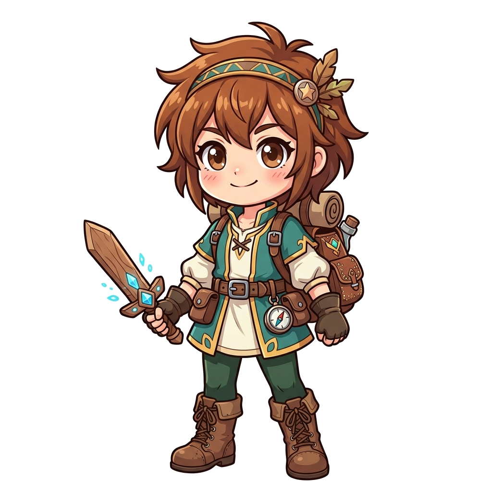
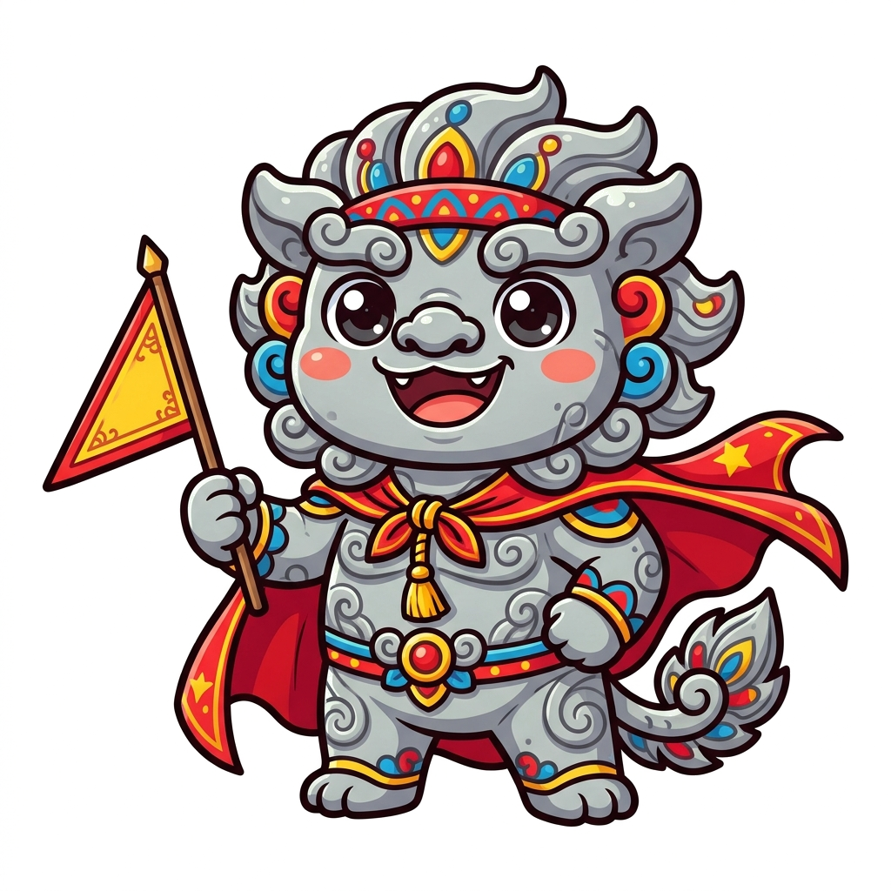
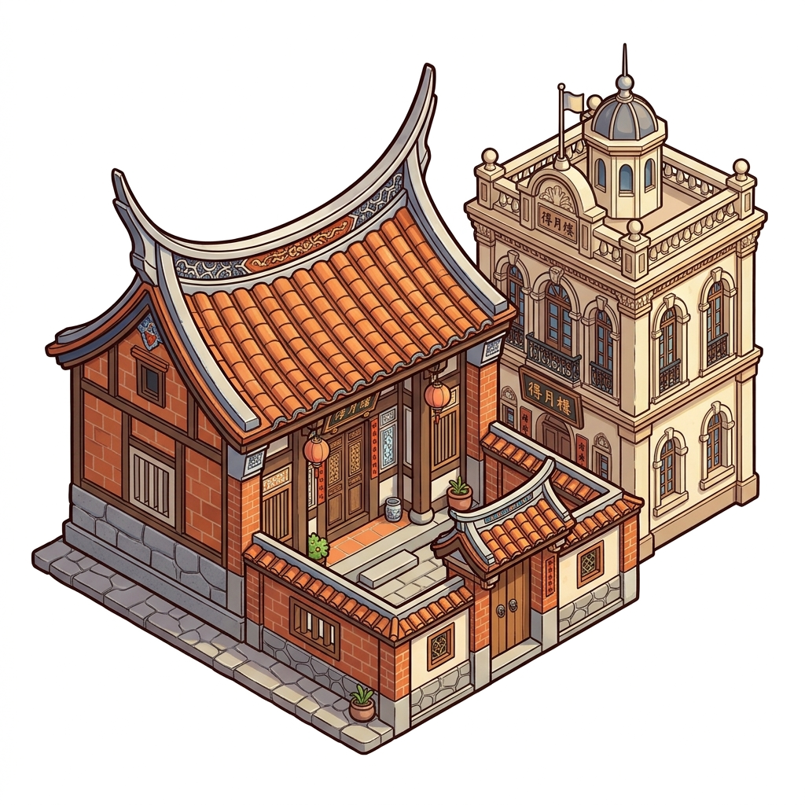
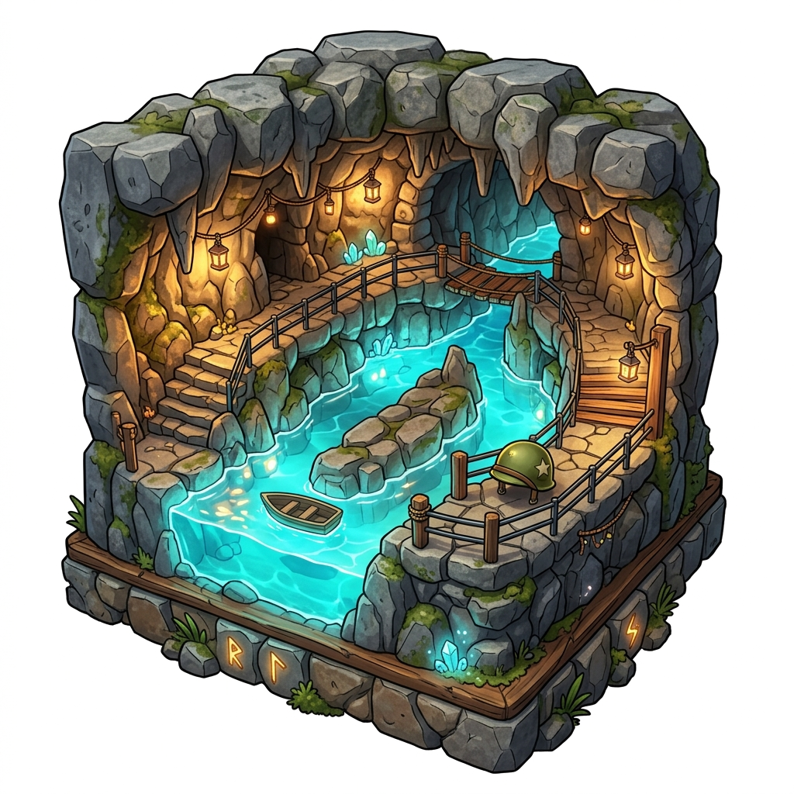
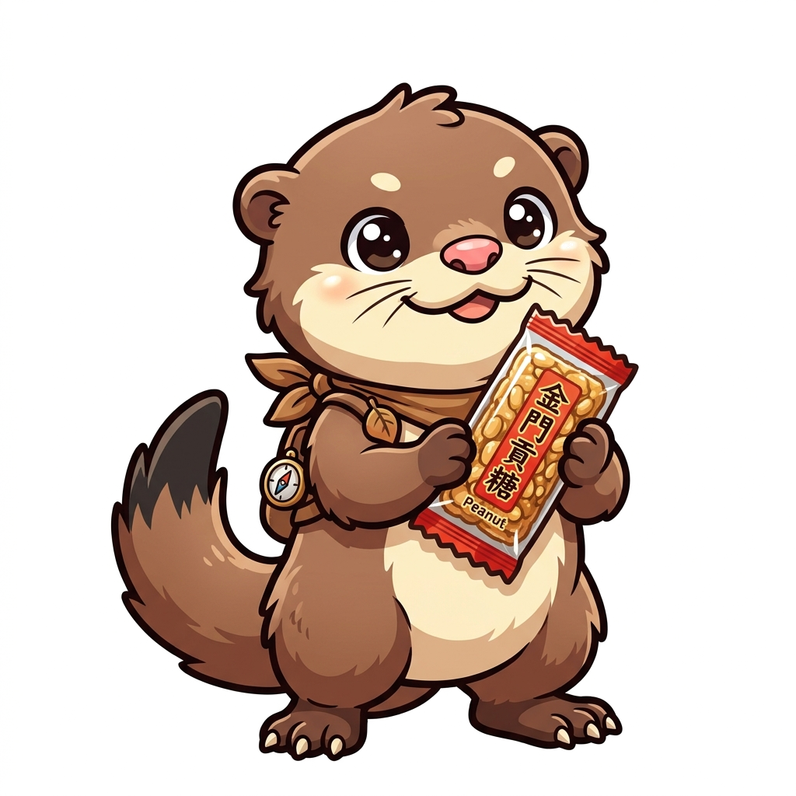

金門尋寶大冒險：風之島
體力：
❤️❤️❤️
靈珠：0/4

風之島的秘密守護者
在地文化閱讀冒險 ✕ RPG 探索大地圖打怪遊戲
📜 冒險任務信：
親愛的小勇者！你翻開了古老的《浯島密卷》，被傳送到了被稱為「海中仙洲」的
金門
。
島上的守護神器「御風靈珠」碎成四塊散落各地，狂風與妖怪四處作亂！請在金門冒險大地圖上移動探索，透過認真閱讀線索答題擊潰怪物，找回靈珠平息狂風！
⚔️ 出發！進入金門冒險大地圖
🗺️ 金門冒險大地圖
點選解鎖據點，小勇者就會走過去喔！
1. 瓊林村 (風獅爺)

2. 水頭古厝 (得月樓)

3. 翟山坑道 (密道)

4. 太武山 (歐亞水獺)
📖 重新閱讀冒險故事
⚔️
小勇者 (玩家)
風沙怪
📜 戰鬥情報線索：點擊展開閱讀
🔽
文本內容
第 1 / 3 回合
問題內容
➡️ 繼續挑戰下一回合
關卡通過！
說明文字
繼續前進